Re-envisioning the SDC program registration experience
In spring 2021, UW Blueprint partnered with Social Diversity for Children Foundation (SDC) to build them a new platform to simplify & streamline the program & volunteer registration processes.
Skills
User research
Interaction design
Visual design
Product strategy
Organization
UW Blueprint
Timeline
May-Aug 2021
Team
2 product designers
1 product manager
1 project lead
6 developers
The project
Designing a multi-language, mobile-first, custom web platform
How might we design a platform to encourage program registration and ease volunteer management?
01: Requirements & constraints
User research
02: User interviews
Conducted with volunteers and program coordinators/teachers to better empathize and squash any assumptions we had.
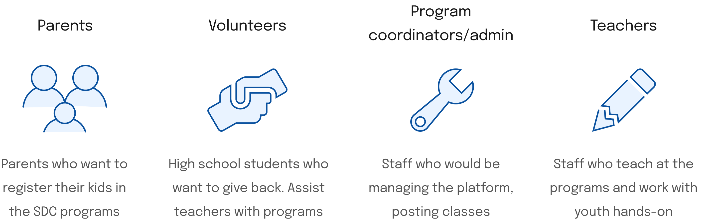03: Discovery session & user journeys
Aligning vision for the product amongst the team while reinforcing our knowledge of each user.
Define
04: Breaking down the problem statement
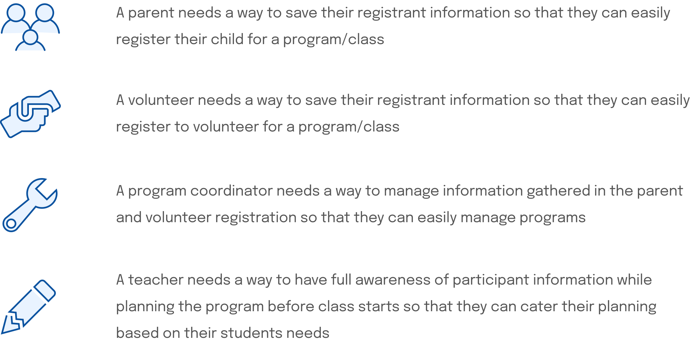
Ideation
05: User flows
06: Iterative mobile lo-fis
Thinking mobile first to create lo-fis for the platform. One set for the Document Submission flow is shown below:
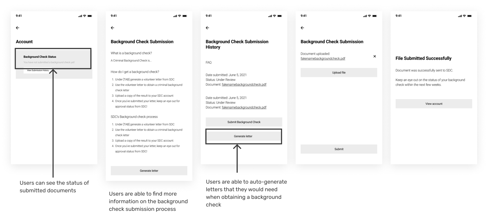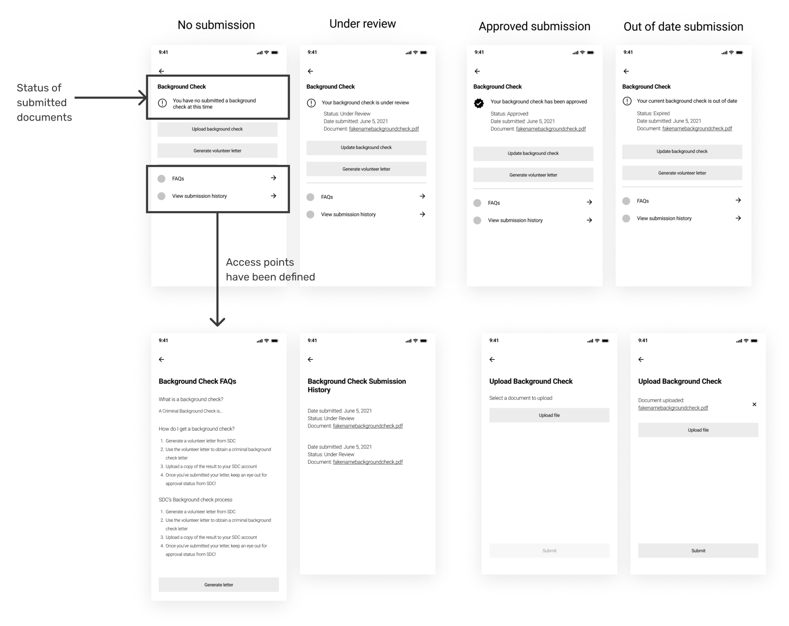
07: User testing
After doing more than 4 different mobile explorations and experimenting with 3 different versions of lo-fidelity designs, we put together a mobile prototype that we sent to parents & volunteers for user testing.
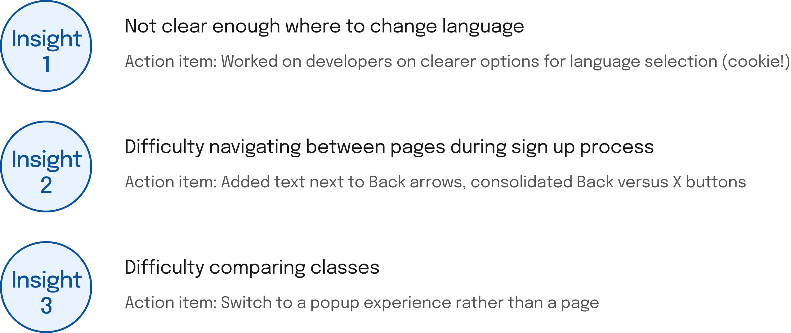
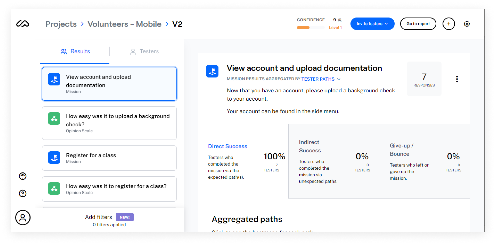
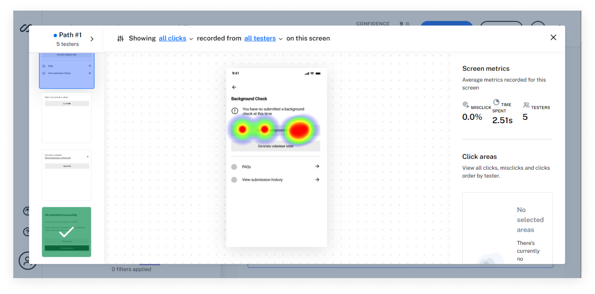
08: Moving from mobile to desktop
Pivoting to desktop lo-fis for developers. One set is shown below:
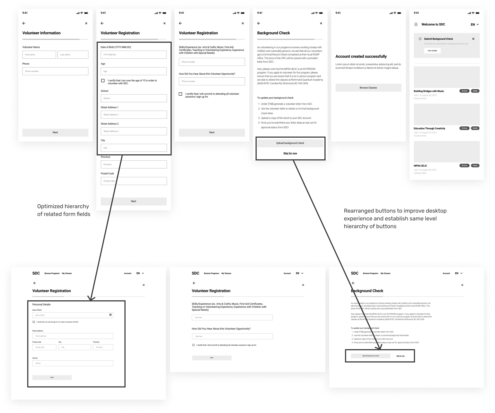09: The transformation of the main landing page
While majority of the pages were form or text heavy, the main page was a dashboard which the additional space on desktop provided great opportunity to make use of the additional space effectively, to improve the browsing experience.
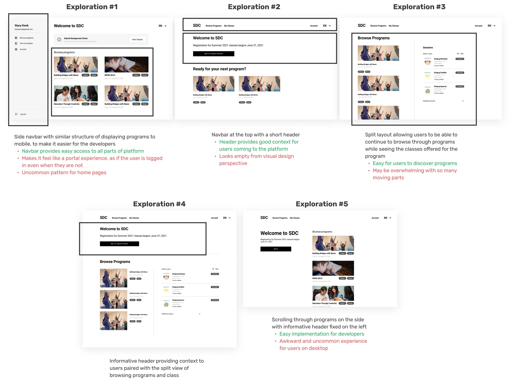
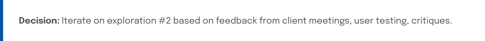
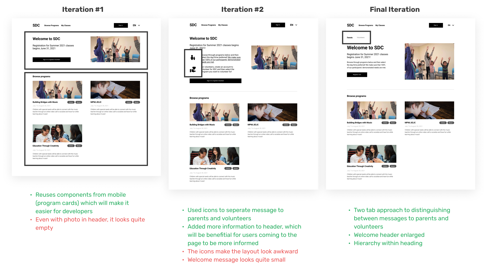
10: Visual design system
Basing the design system we created, off the branding & styling of their current main website.
11: Final designs
Inviting programs & classes to browse through
Simple account sign up & program registration
Reflection
A whole platform, mobile first, from scratch
So much was learnt this whole project! Designing a pretty large platform all mobile first, and completely from scratch, proved to be a fun challenge.